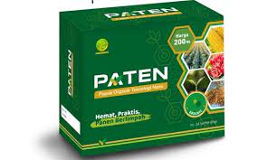
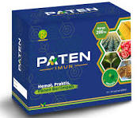
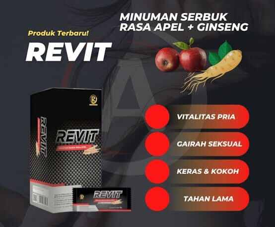
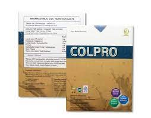
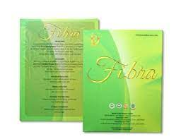

PRODUK PERTANIAN
Paten Pupuk
Keunggulan Paten Pupuk:
- Meningkatkan Hasil & kualitas produksi
- Mempercepat masa panen
- Merangsang pembuhan di luar musim
- Meringankan biaya produksi
- Memperkuat daya tahan tanaman terhadap cuaca ekstrem
Paten Imun
Keunggulan Pupuk Paten Imun:
- Meningkatkan Imunitas tanaman terhadap Bakteri, Virus dan Jamur
- Meningkatkan kinerja Paten 10 kali lipat
- Menghemat Fungisida sampai 100%
- Menghemat Pestisida sampai 80%
- Menghemat Pupuk Kimia sampai 80-100%
Paten Gold

Keunggulan Pupuk Paten Gold:
- Mempercepat masa Panen
- Merangsang pembuahan di luar musim
- Meringankan biaya produksi
- Mudah di aplikasikan
- Memperkuat daya tahan tanaman terhadap cuaca ekstrem
PRODUK KESEHATAN
Revit
Keunggulan Revit:
- Membuat ereksi lebih kuat dan tahan lama
- Menambahkan stamina & Vitalitas Pria
- Menambahkan Gairah Seksual
- Meningkatkan Kejantanan Pria
- Meningkatkan sirkulasi darah
- Melancarkan Peredaran darah
Colpro
Keunggulan Colpro:
- Memperkuat sistem kekebalan tubuh
- Meregenerasi Sel
- Membunuh Bakteri penyebab iritasi lambung
- Membantu pengobatan alergi dan asma
- Membantu pengobatan flu
- Menjaga kesehatan jantung dan pembuluh darah
Fibra
Keunggulan Fibra:
- Memperkuat sistem kekebalan tubuh
- Meregenerasi Sel
- Membunuh Bakteri penyebab iritasi lambung
- Membantu pengobatan alergi dan asma
- Membantu pengobatan flu
- Menjaga kesehatan jantung dan pembuluh darah